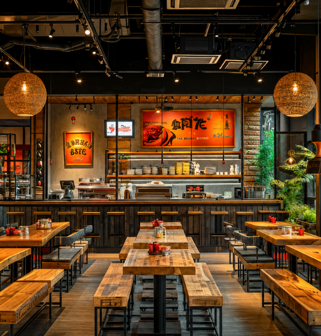
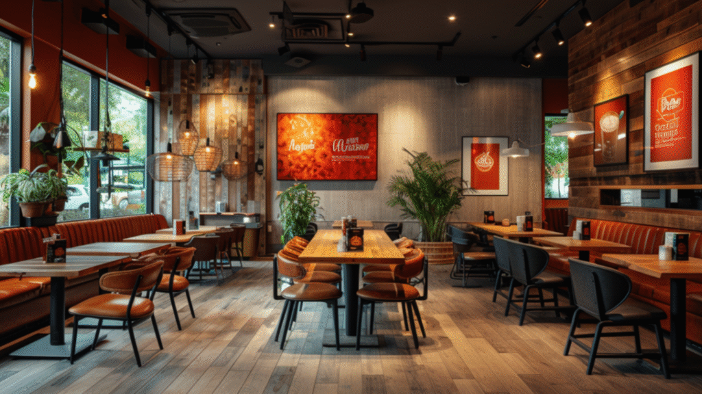

Most restaurant chains dream of scaling fast. More locations, more customers, and ultimately, more revenue.
But here’s what actually happens:
- Each new outlet takes months longer than planned.
- No two stores look the same—losing brand consistency.
- Costs keep rising due to inefficient design & procurement.
Sound familiar?
The reality is, expansion isn’t just about opening new locations—it’s about doing it efficiently, consistently, and profitably. And many restaurant brands get stuck because they underestimate how much design, build quality, and process optimization affect their ability to scale.
At SprintCo, we’ve helped QSR giants, fine-dining brands, and fast-casual concepts expand efficiently by fixing the most common growth bottlenecks. Here’s what we’ve learned along the way.
1. Every Delay Costs You More Than Just Time

Every extra month spent on construction isn’t just a delay—it’s lost revenue. And when opening dates keep shifting, marketing campaigns, staffing, and operations suffer.
Why does this happen?
- Over-reliance on on-site construction → Traditional build methods lead to unpredictable delays.
- Inconsistent contractor quality → Different teams work on different outlets, causing discrepancies in quality and timeline.
- Permits and approvals → Many brands don’t factor in how long local regulations and compliance approvals take.
How We Solve This: At SprintCo, we reduce build times by combining intelligent design with modular construction techniques. Through FlatPackCo, our pre-engineered, precision-built modules allow restaurant owners to open locations in weeks instead of months, minimizing downtime and keeping expansion on track.
2. Brand Consistency Is Harder Than It Looks
Imagine walking into a chain restaurant—one outlet has a sleek, modern interior, while another looks outdated and cluttered. That disconnect doesn’t just hurt aesthetics—it weakens your brand identity.
Why does this happen?
- Different architects and contractors per site → No standardized design implementation.
- Sourcing from different vendors → Variations in material quality, finishes, and fixtures.
- Space constraints at new locations → Adapting a concept to a new footprint without a structured approach leads to inconsistency.
How We Solve This: We create design systems, not just blueprints. Our process ensures every new outlet maintains the same look, feel, and functionality—whether it’s a 500 sq. ft. express counter or a flagship 3,000 sq. ft. space. We set brand standards for layout, materials, lighting, and workflow so customers always recognize the experience, no matter where they visit.
3. Hidden Costs Are Eating into Your Margins

Most restaurant owners assume expansion is costly because of rent or raw materials. But the biggest hidden costs come from:
- Inefficient layouts → Staff takes longer to move between stations, slowing service times.
- Poor procurement strategies → Sourcing locally for each store might seem cost-effective, but bulk procurement saves thousands in the long run.
- Reworks and last-minute fixes → Small design mistakes multiply when replicated across locations, driving up renovation costs.
How We Solve This: At SprintCo, we design with operations in mind. Our layouts ensure:
- Optimized workflows so staff can move efficiently.
- Standardized procurement to lower costs without compromising quality.
- Future-ready spaces so you don’t have to renovate within a year of opening.
Scaling Smart: The SprintCo Approach

Expanding isn’t just about more locations—it’s about scaling without the usual headaches.
At SprintCo, we design for:
- Operational efficiency → Every inch of space is planned to maximise productivity.
- Brand consistency → So customers recognize your brand, no matter the location.
- Fast rollouts → So you scale faster without construction delays.
And with FlatPackCo, we take it a step further—offering pre-engineered, precision-built solutions that cut build time, reduce waste, and ensure seamless execution across all locations.
If you’re planning to expand your restaurant chain, the right design and build approach can make or break your success. Let’s make sure it’s the former.